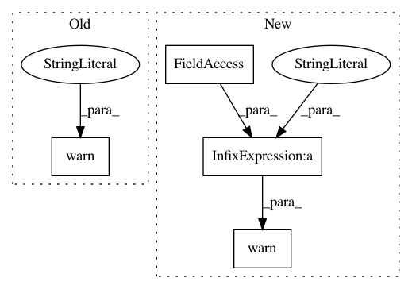

560cb94519ad5a5eed3adc323a9e1ad3cf0690e9,keras/callbacks.py,EarlyStopping,on_epoch_end,#EarlyStopping#Any#Any#,227
Before Change
def on_epoch_end(self, epoch, logs={}):
if not self.params["do_validation"]:
warnings.warn("Early stopping requires validation data!", RuntimeWarning)
cur_val_loss = logs.get("val_loss")
if cur_val_loss < self.best_val_loss:
self.best_val_loss = cur_val_loss
After Change
def on_epoch_end(self, epoch, logs={}):
current = logs.get(self.monitor)
if current is None:
warnings.warn("Early stopping requires %s available!" % (self.monitor), RuntimeWarning)
if current < self.best:
self.best = current
self.wait = 0
In pattern: SUPERPATTERN
Frequency: 3
Non-data size: 4
Instances
Project Name: keras-team/keras
Commit Name: 560cb94519ad5a5eed3adc323a9e1ad3cf0690e9
Time: 2015-06-30
Author: francois.chollet@gmail.com
File Name: keras/callbacks.py
Class Name: EarlyStopping
Method Name: on_epoch_end
Project Name: asappresearch/sru
Commit Name: 657c96e2577fea6cd4c977cef32be30d02c136ae
Time: 2020-12-07
Author: hp@asapp.com
File Name: sru/modules.py
Class Name: SRUCell
Method Name: reset_parameters
Project Name: keras-team/keras
Commit Name: 560cb94519ad5a5eed3adc323a9e1ad3cf0690e9
Time: 2015-06-30
Author: francois.chollet@gmail.com
File Name: keras/callbacks.py
Class Name: ModelCheckpoint
Method Name: on_epoch_end